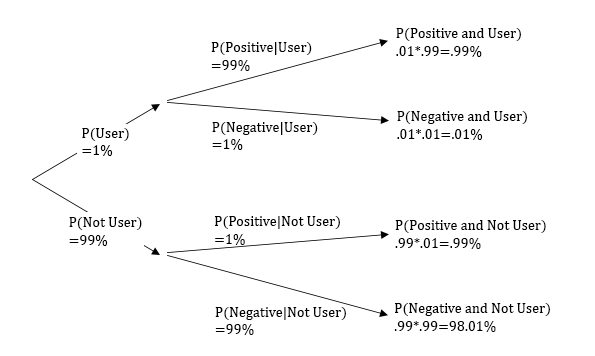
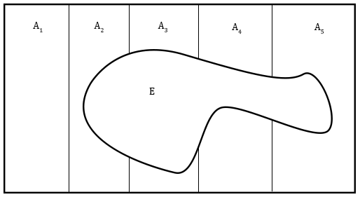

Probability Basics¶
Equally likely events¶
If we flip a fair coin, the probability of getting heads or tails is equal. What this means is that if we flip a coin many times that the percentage of both heads and tails will go to 50%.
import random
from typing import Tuple
# Runs n trials of a coin flip and returns the number of heads and tails.
def runTrials(n: int) -> Tuple[int, int]:
heads = 0
tails = 0
for i in range(n):
# random.random() returns a random number between 0 and 1. Half the time this value is less than 0.5.
if random.random() < 0.5:
heads += 1
else:
tails += 1
return heads, tails
# Format the output of runTrials.
def printResults(heads: int, tails: int) -> None:
print("Trials:", heads + tails, "Proportion:", heads/(heads+tails),"Heads:", heads, "Tails:", tails)
# The * operator unpacks a list or tuple into separate variables.
printResults(*runTrials(10))
printResults(*runTrials(100))
printResults(*runTrials(1_000_000))
Trials: 10 Proportion: 0.5 Heads: 5 Tails: 5
Trials: 100 Proportion: 0.47 Heads: 47 Tails: 53
Trials: 1000000 Proportion: 0.500733 Heads: 500733 Tails: 499267
In our previous example we made a random selection between heads and tails. A random selection means that each value is equally likely. For example, a randomly selected card from a deck of \(52\) cards has probability \(1/52\) of being a 2 of clubs.
When every possible outcome has equal probability, the formula for the probability of some subset of the outcomes is:
For our coin flipping example, we have \(2\) possible outcomes: heads and tails. The number of selected outcomes is \(1\) (either heads or tails), so the probability is \(1/2\).
Playing cards example¶
What is the probability of drawing 4 aces when we randomly select 5 cards from a deck?
To draw the 4 aces, we must select 5 cards. 4 of them are aces and 1 of them is not. \({4 \choose 4}\) is the number of ways to select 4 aces. \({48 \choose 1}\) is the number of ways to select the non-ace. The number of ways to select the 4 aces is:
The number of ways to draw 5 cards is:
The answer is then:
Terminology¶
Experiments¶
When we flip a coin or roll a die that is an experiment. Experiments have a set of possible outcomes that happen with some probability.
Sample space¶
The set of all possible outcomes of an experiment is the sample space. When we flip a coin once the sample space is \(S=\{H,T\}\). When we flip a coin twice the sample space is \(S=\{HH,HT,TH,TT\}\).
Events¶
Events represent a set of possible outcomes from an experiment. When we flip two coins there is an event for flipping two heads, \(E_\text{both heads}=\{HH\}\). There is also an event for not flipping two heads \(E_\text{not both heads}=\{HT,TH,TT\}\). An event is a subset of the sample space. It may represent a single outcome of our experiment, or it may represent several of the possible outcomes:
We can rewrite our formula for probabilities when all outcomes of an experiment are equally likely using \(n(E)\) for the number of selected outcomes.
Example¶
We roll two dice and want to calculate the probability that the dice sum to 4. Define the experiment, sample space, event, and calculate the probability of the event.
The experiment is rolling two dice.
The sample space is the set of all possible ordered combinations of two dice. We can define it in set builder notation:
\(n(S) = 36\) because there are \(6\) possible outcomes for each die and we use the multiplication principle.
The event contains the elements of the sample space that sum to 4.
The probability is
Probability Functions¶
A probability function \(P\) calculates the probability of an event. When we flip a coin twice the probability of getting a head and a tail is:
For experiments where all outcomes are equally likely:
A probability is between \(0\) and \(1\) because an event can’t happen less than \(0\%\) of the time or more than \(100\%\) of the time. More formally, \(P\) is a function that takes an event as input and gives a number between \(0\) and \(1\) as output. In notation:
The rule about probabilities being between \(0\) and \(1\) is derived from some more basic assumptions and not intuition about the percentage of times something occurs. Let’s talk about these basic assumptions.
Probability Axioms¶
There are three fundamental assumptions (called axioms) about probability functions from which our other laws are derived.
First Axiom - For an event \(E\), and probability function \(P\):
Second Axiom - For a sample space \(S\):
Third Axiom - If \(E_1, E_2, ...E_n\) are mutually exclusive events:
Recall that mutually exclusive means that sets have empty intersections. We have already seen that \(n(E_1 \cup E_2) = n(E_1) + n(E_2)\) for mutually exclusive events. Our third axiom says something similar for the probability of mutually exclusive events, \(P(E_1 \cup E_2) = P(E_1) + P(E_2)\)
Probability Properties¶
From our axioms we can derive important properties of probability functions.
For example, We can show that \(P(A) + P(A^C) = 1\).
This implies that \(P(A^C) = 1 - P(A)\).
Here are some useful formulas that can be derived from these axioms.
As with counting, the formula for two unions gives us a formula for 3 unions.
Notice that these formulas are the same as our formulas for the size of the set if we swap out \(P\) for \(n\) and \(1\) for \(n(S)\).
Example: Coin Flipping and Axioms
If we flip a coin, heads and tails are mutually exclusive events.
We know that \(P(\{H\}), P(\{T\})=.5\) from our formula for equally likely events at the beginning of the chapter. Note that \(S = \{H\} \cup \{T\}\) so this example also illustrates that \(P(S)=1\).
Conditional Probability¶
Suppose we have some cats and dogs that are either fluffy or not fluffy.
Row title |
Fluffy |
Not fluffy |
Total |
|---|---|---|---|
Cats |
21 |
18 |
39 |
Dogs |
35 |
26 |
61 |
Total |
56 |
44 |
100 |
We can calculate the probability of a randomly selected pet being fluffy using our formula for equally likely events.
We can calculate the probability of a pet being a fluffy cat as:
We can also calculate the probability of a pet being fluffy, given that the pet is a cat. Notice that the denominator is not all the pets, but only the number of cats.
This is a conditional probability because it is conditioned on the pet being a cat. There is notation for this.
Notice that \(P(\text{Fluffy|Cat})\) does not mean the same thing as \(P(\text{Fluffy})\).
Formulas¶
The probability of event \(A\) given that event \(B\) has occurred is denoted \(P(A|B)\) and pronounced “the probability of A given B”. The general formula for this is
We can calculate \(P(A \cap B)\) by rearranging the formula.
Conceptuaize this as an event B happening with probability \(P(B)\) and then an event \(A\) happening with probability \(P(A|B)\), so \(P(A \cap B) = P(B) \cdot P(A|B)\)
For experiments where all outcomes have equal probabilities \(P(A|B)\) can be calculated with set sizes. Here is a derivation:
Independence¶
Events are independent if they do not influence each other. The second flip of a coin is not influenced by the first flip, so the two events are independent.
If two events influence each other they are not independent. Let the event that the first card pulled without replacement from a deck is a jack be \(J_1\) and the event that the second card pulled is a jack is \(J_2\). If I pull a jack on my first try there will be less jacks in the deck for the second draw. The event \(J_1\) has an effect on \(J_2\) and these events are not independent.
Definition of Independence: Events \(A\) and \(B\) are said to be independent if \(P(A|B)=P(A)\).
This definition is equivalent to \(P(A \cap B) = P(A) \cdot P(B)\) after substitution with the conditional probability formulas. This identity has it’s own name:
Multiplication Rule for Independent Events: If \(A\) and \(B\) are independent events then \(P(A \cap B) = P(A) \cdot P(B)\).
Let \(H_n\) be the event that the nth flip of a coin is heads so that \(H_2\) means the second coin flip is heads. The multiplication rule for independent events works for more than two events if all events are mutually independent so that \(P(H_1 \cap H_2 \cap H_3 \cap H_4)=P(H_1)\times P(H_2)\times P(H_3)\times P(H_4) = (\frac{1}{2})^4\).
Bayes Theorem¶
Bayes Theorem Intuition¶
Suppose 1% of the population uses drugs. 98% of drug users test positive on a drug test and 2% of non-users test positive. What is the probability that a person testing positive for a drug test has used drugs?

Using the above tree diagram and the definition of conditional probability we calculate:
Let’s explain these steps in more detail.
Law of Total Probability¶
In the example above we use the following identity:
This identity works because:
There is a more general formulation of this known as the law of total probability:
Events \(A_1,A_2,...,A_n\) are said to be a partition of the sample space \(S\) if \(A_1 \cup A_2 \cup... \cup A_n=S\) and if for all \(i,j: \ A_i \cap A_j = \emptyset\). This just means that the sets \(A_1,A_2,...,A_n\) cover the whole set and there is no overlap between the sets.
If sets \(A_1,A_2,...,A_n\) partition \(S\) then for any event \(E\) we have the law of total probability:
This visual might be useful:

Consider how \(P(E) = P(E \cap (A_1 \cup A_2 \cup ... \cup A_n))\) and then revisit the algebra.
Bayes Theorem Formula¶
For a partition \(A_1,A_2,...,A_n\) of event \(E\):
Returning to our example of drug use, people either are drug users or aren’t. So the drug use partitions people that are tested for drugs.